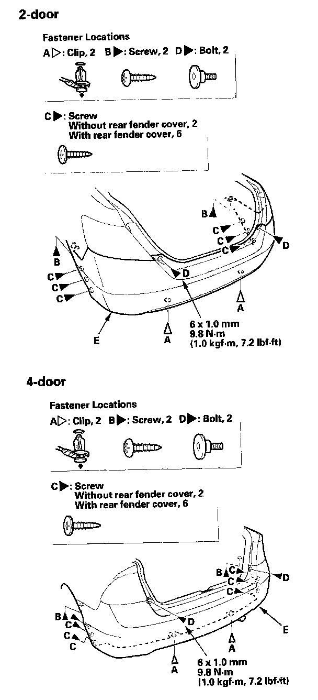
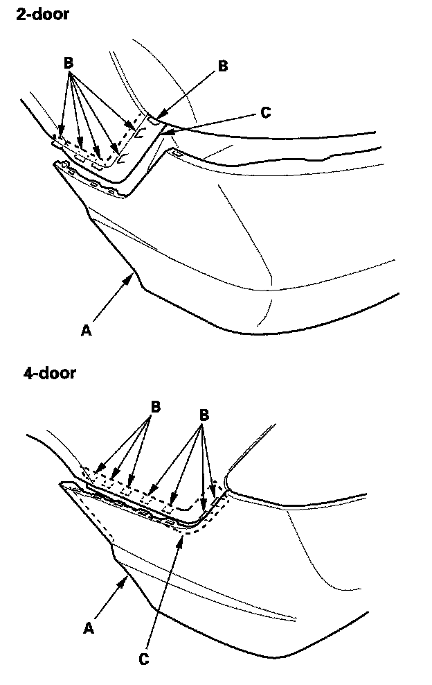
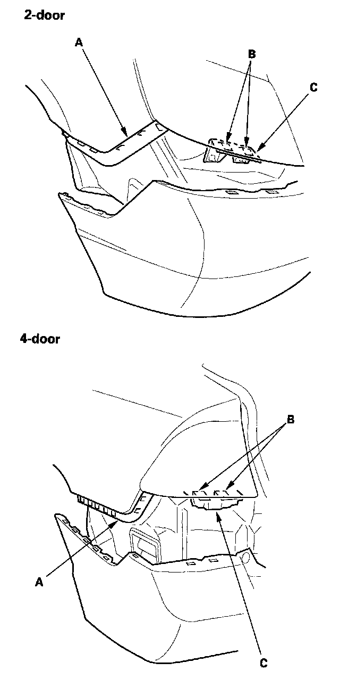
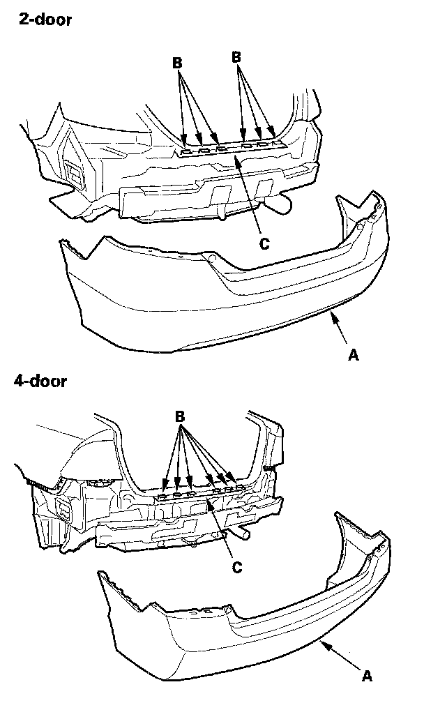
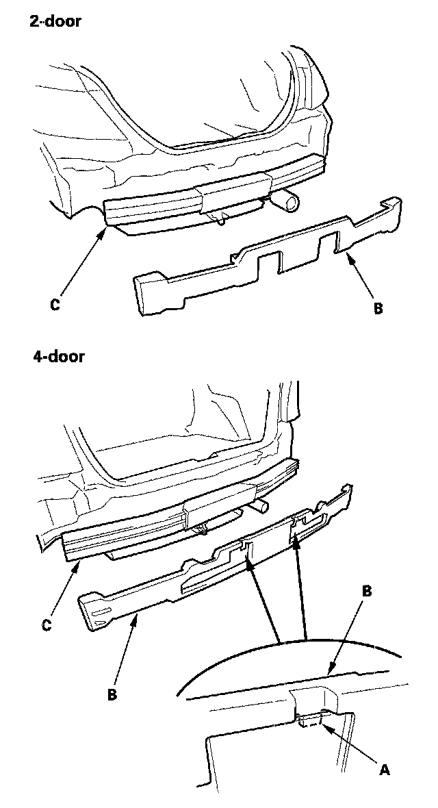

Rear Bumper: Service and Repair
Rear Bumper Removal/InstallationNOTE:
- Have an assistant help you when removing and installing the rear bumper.
- Take care not to scratch the rear bumper and body.
- Put on gloves to protect your hands.

1. Remove the clips (A), screws (B, C), and bolts (D) securing the rear bumper (E).

2. Pull on the rear bumper (A) at the wheel arch areas to release it from the hooks (B) on the side spacers (C).

3. With the help of assistant, while pulling the wheel arch portion away from the side spacer (A), pull the rear bumper to release the bumper from the hooks (B) on the side bracket (C).

4. With the help of an assistant, pull the rear bumper to release the bumper (A) from the hooks (B) on the upper bracket (C).

5. Remove the hooks (A) (4-door), then remove the rear bumper absorber (B) from the rear bumper beam (C).
6. Install the bumper in the reverse order of removal, and note these items:
- Make sure the rear bumper engages the hooks (of both the side bracket and side spacers) on each side securely.
- Check if the clips are damaged or stress-whitened, and if necessary, replace them with new ones.
- Push the clips and hooks into place securely.